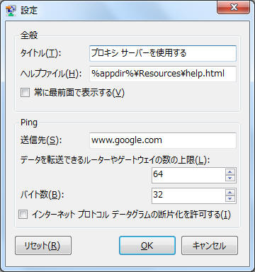

タイトルやPingの設定を変更します

タイトル：このアプリケーションのタイトルを変更します。空欄にすると、「無効」「有効」のみの表示になり、とてもシンプルになります。
ヘルプファイル：ヘルプボタンを押したときに表示されるファイルの場所を指定します。通常、設定する必要はありませんが、ヘルプが見られないときに設定します。「%appdir%」と入力すると、アプリのディレクトリを指定できます。
送信先：Pingを送信するアドレスを設定します。既定では、「www.google.com」が設定されています。安定している場所に送信しないと、ネットワークにつながらないときに切り分けが難しくなります。
※注意：送信先は、「http://」を除いたアドレス（ホスト名）にしてください。「http://」を付けたままでも通信できるようにしましたが、まだバグがあるかもしれないので、ホスト名を入力してください。
例： www.google.com, 74.125.235.178 （IPv6はデバッグ環境がないので、不明）
データを転送できるルーターやゲートウェイの数の上限：データを送信するときに、ルーターやゲートウェイの通過する数を制限します。が、僕の環境では動きません。（既定では64です）
バイト数：送信するバイト数を設定します。1から1024まで設定できます。既定では32バイトです
インターネット プロトコル データグラムの断片化を許可する：インターネット プロトコル データグラムの断片化を許可するかどうかを設定します。既定では、falseです。（僕もわかりません...）
このアプリケーションの設定を初期値に戻して、このアプリケーションを再起動します。これにより、不安定な動作がなくなることがあります。